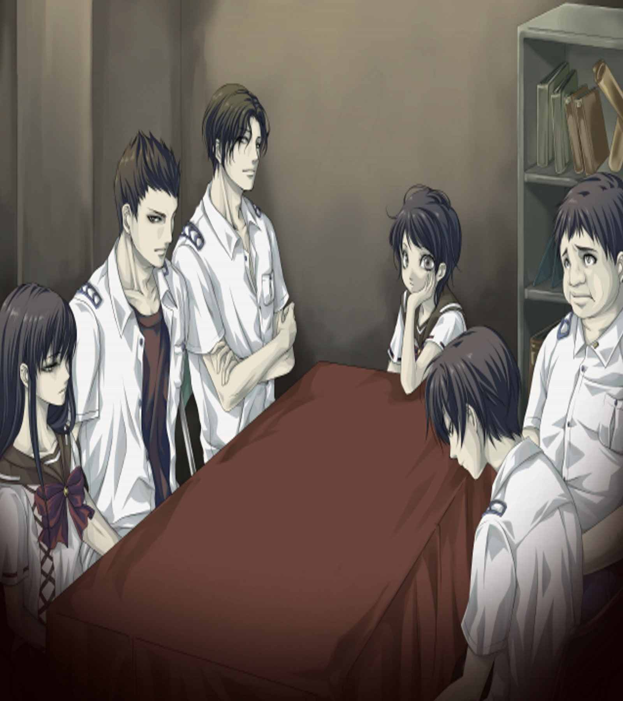
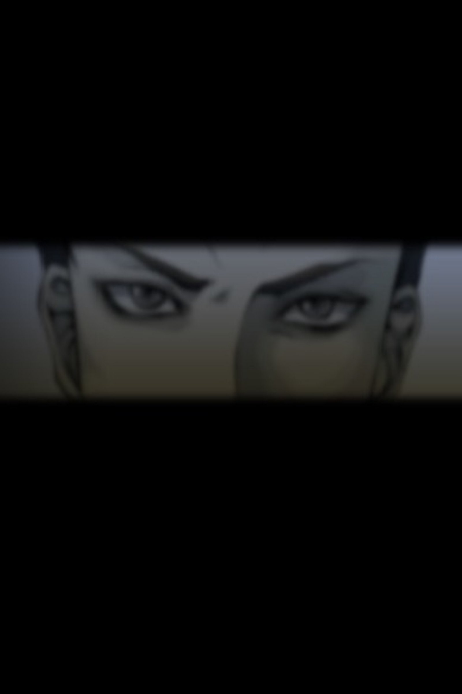
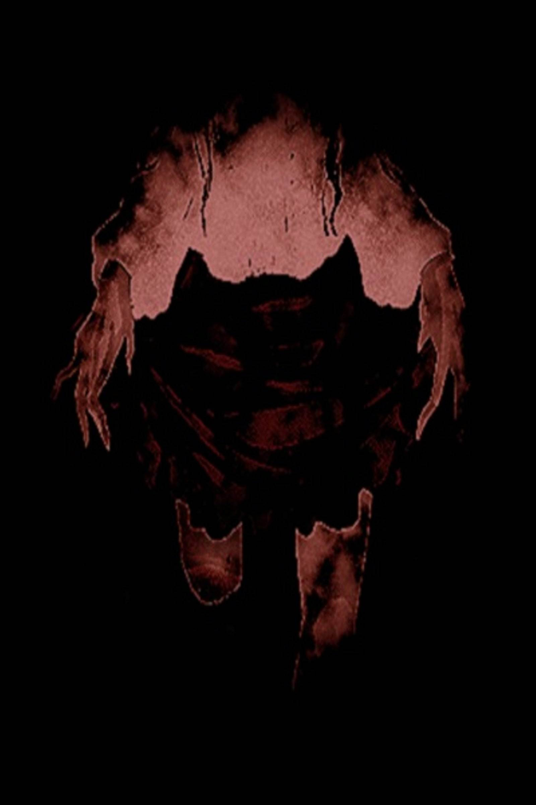
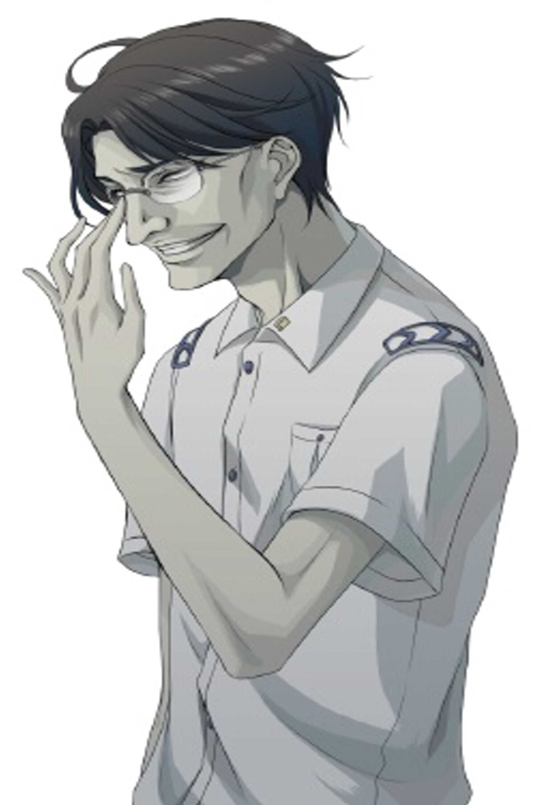
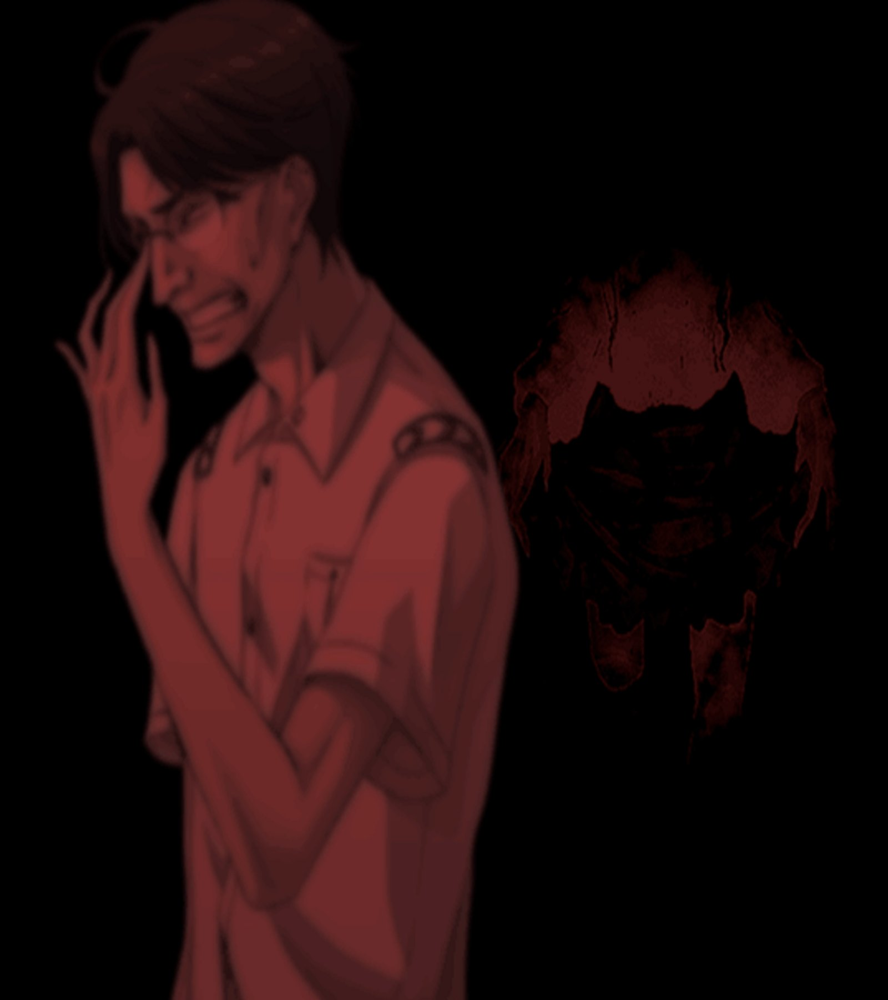
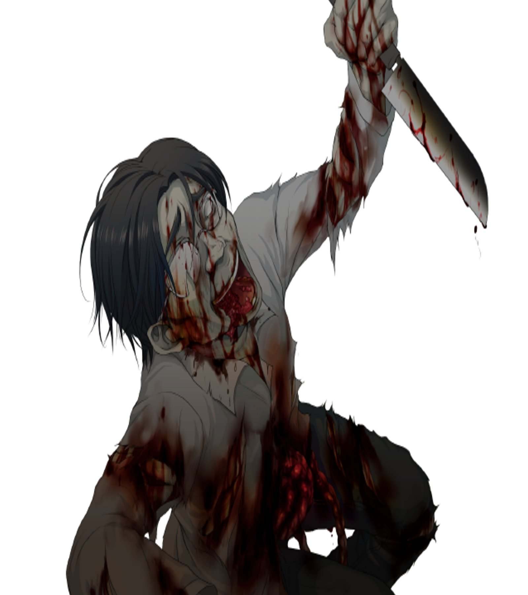
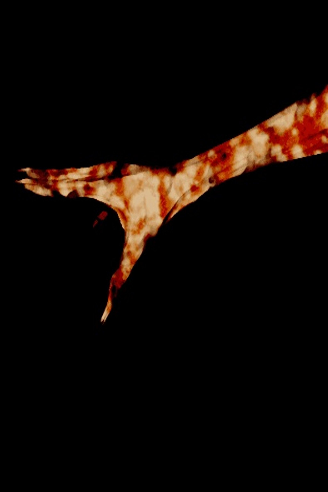

| アパシー 学校であった怖い話1995 vol.１ | |
| 飯島多紀哉 | |
| Toshiba (2017) | |
ワタシの人形
私の人形はヨイ人形。何でも言うことを利 くし、私が生まれたときからずっとイッショ。
寝るときも、学校に行くときもずっとイッショなの。
片時 だって、離 したりしないわ。
私は、この人形をとっても大事にしているの。名前は、マミちゃん。マミちゃんがイッショにいれば、私はシアワセ。
でも、高校に行くようになってから、チョット困ったこともあるの。
クラスのイジメっ子たちが、マミちゃんを取り上げて、イジメたりするの。
トイレに閉じ込めたり、クツを隠したり、時には泥水の中に落としたりするの。
せっかくキレイなお洋服を着ていても、これじゃあダイナシ。
......ああ、今日もイジメるのね。
そんな、やめてよ。私のマミちゃんになにするの。
そんなことしたら、おっこっちゃう。
ここは、三階よ。落ちたら、かわいそうじゃない。
冗談じゃ、すまないでしょ。
あ――――。
......ああ、マミちゃん、かわいそう。
私のマミちゃん、死んじゃった。
カワイイ、人形だったのに。
「あら、これ、真美の持ってた人形じゃない？ どうする？」
「もらっちゃえば？」
「やぁよ、良江。たった今持ち主が死んだ人形なんて、呪われてるに決まってるわ」
「そっかな？ じゃ、私もらっちゃお。真美の形見だと思えばいーじゃん。キャハハハハ」
「どうぞ、ご勝手に」
あなたのお名前は、ヨシエちゃんっていうの？
ヨシエちゃんが、私の新しい人形になってくれるのね？
ヨシエちゃん、イジメられて死んだりしないでね。うふふふふ。
オープニング
「なあ、今度は学校の七不思議の特集をやろうぜ」
「お、いいじゃん。それ、決まり」
実に簡単な打合わせだった。部長の一言で、今度の校内新聞は、学校の七不思議をメインにすることで決まったのだ。
夏休み前、最後の校内新聞は季節がらちょうどよかったのかもしれない。それに、長年使われていなかった旧校舎も、この夏休み中に取り壊されることになったし。それと掛け合わせても、今やるのはベストな企画だろう。当然、反対するものはいなかった。
「坂上、お前、この企画やってみろ」
「僕がですか？」
日野先輩が、どうして僕なんかを指名したのかはわからない。第三者から見ても、多分この企画はおもしろいものになるだろう。しかも、メイン特集だ。
そんな大事なものを、まだ新聞部に入って間もない一年生の僕に任せるなんて、ちょっと信じられない。
「何、驚いた顔してんだよ。お前、怖い話は苦手か？」
日野先輩が、茶化すように僕を見る。それもある。けれど、そう思われるのは癪 だな。
「そんなことないですよ。
でも、僕なんか、まだ新人ですし、
学校の怖い話といってもあんまりよく知らないですから、
こういう企画は先輩方にお譲 りしたほうが......」
「いいんだよ。お前がやれば」
僕は、愛想 を振りまいたつもりだったけれど、逆に日野先輩の気に触 ったようだった。
「お前が、学校の怖い話なんか知らないのは、俺だって百も承知さ。
悪いけどさ、俺はこう見えても怖い話にはうるさいんだぜ。
この学校の七不思議だって、お前なんかよりもずっと詳しいからな」
だったら、日野先輩がやればいいのに。どうして、僕なんかにそんな大役 を任せるんだ。
「......だから、お前にやってほしいのさ。お前には、完全に客観的 な立場でいて欲しいわけ。学校の七不思議は、怖い話に精通 した連中に選んでもらう。
お前は、そいつらの話を聞いて、それを記事にまとめればいいんだよ。
そうすれば、生 の怖さってものが新聞を読む連中にも伝わるじゃないか。
お前が、怖い話に詳しかったら困るの。
お前は、単なる聞き手として、怖がってくりゃいいの。
そこんとこが大事なんだよ」
そういって、日野先輩は僕の頬 をペタペタとたたいた。何だか、ものすごく馬鹿にされている感じだ。けれど、立場の弱い新人としては黙って従うしかないよな。
「俺がさ、とっておきの怖い話を知っている連中を七人集めてやるよ。
だから、お前は彼らの話を聞いて、真剣に怖がってろ」
「......はあ」
何だか、損 な役回りだ。それでも、見る見るうちに話は決まっていってしまった。
結局、僕はこの企画を任されることになった。
結論からいうと、日野先輩が学校の七不思議に詳しい人間を七人集めてくれるそうだ。
明後日、この新聞部の部室に、だ。
そこで、僕は集まった七人から一人一話ずつ話を聞いていき、それを記事にまとめればいいらしい。
なんでも、新人の僕がたどたどしい文章で書いたほうが、読み手は感情移入できて、より怖さを倍増できるから、という理由だった。
本当に馬鹿にしている。ま、それでも僕の文章がヘタだというのは、当たっているから仕方がないけれど。
......それにしても、どんな七人が集まるんだろうか。ちょっと不安だ。
約束の日が来た。
日野先輩は何だか忙しいらしく、これないということだった。どこまで僕のことを馬鹿にすればいいんだろうか。
集まる七人は、初対面の人ばかりだろう。
なんせ、この学校は一学年に五百人はいるマンモス校だ。入学してから卒業するまで、ただの一度だって顔を合わせない生徒もいるくらいだ。
本当に、どんな人が集まってくるのか心配になってきた。
怖い話に詳しいというくらいだから、やっぱり暗い人たちなのだろうか。
それだとなおさら心配だ。僕は、うまく彼らの話を聞けるんだろうか。
もし、機嫌を損ねて話してくれなかったらどうしよう。
ええい、そんなこと気にしても仕方ない。行けば、何とかなるだろう。
僕は、そんなことを考えながら、新聞部に向かって放課後の廊下を歩いていた。
......それにしても蒸し暑い。息を吸うと、空気が喉に絡みついてくる。
雨でも降るんだろうか。
そういえば、怪しい雲行きだ。僕は、思わず窓から身を乗り出した。
嫌な空だ。空が固まったように、黒い雲が動かない。
自分の居場所を見つけたかのように、どっしりと居座り続けている。
その場を動かないくせに、渦を巻くように蠢いている。まるで、獲物を狙うように。
そういえば食虫植物に、あんなのがあったけな。
頬を撫でる風も何となく生暖かく感じるのは、あの雲のせい？
それとも、これから怖い話を聞きにいかなければならないという嫌悪感のせい？
......とても、気だるい。
その気だるさは、今朝から付きまとっていたものだ。
僕の中と同化してしまいそうなほど、シャツが汗でへばり付いてくる。
それがまた、さらに不快感を誘うんだ。
僕の頬を伝うのは汗なのか、それとも冷汗なのか。
息を吐き出すと、胃の中のものまで吐き出しそうな不快感。
僕の視界の片隅に、新聞部のプレートが映り込む。
あそこで、僕はこれから怖い話を聞かなければならないのだ。こんな悪天候で、こんな気分の悪い日に。
僕は、あのときにこの企画を軽々しく受けてしまった自分が恨 めしい。
そういえば、この気だるさは、今朝からのものじゃない。
あの日あの時、この企画を受けたときから僕を支配していたのだ。
なぜだろう。なぜか、僕の中の何かが、あの新聞部のドアを潜ることを拒否している。
ただ怖い話を聞くだけだというのに。
そりゃあ、元から怖い話はあまり得意なほうじゃなかった。
怖いもの見たさという気持ちも人並みにあるけど、それ以上のものじゃない。
何のことはないいつもの道程なのに、とても新聞部が遠く感じられる。一歩ずつ踏み出す足が、廊下から生えた手に押さえつけられているようにとても重い。
それでも、新聞部に向かっているのはなぜなんだろう。妙な使命感が、僕の心のどこかにある。そして、僕はドアのノブに手をかけた。
このノブを回せば、僕はもう逃げることはできないのだ。何から？ 何から、逃げられないというのだ。
そんなに深く考えることか。たかが、怖い話を聞くだけじゃないか。
僕が気だるいのは、体調が悪いからなのだ。
それ以外に考えられない。
別に、気にすることはないはずだ。
そう自分に言い聞かせ、僕はゆっくりとドアを開けた。
「うっ......」
ドアを開けた途端、むせ返るような暑い空気が僕の全身を襲った。閉め切っていたからだ。
何という重々しい空気。まるで、水中を歩いているようだ。
「あ......」
僕は、思わず声を漏らしてしまった。
あまりに静かなので、中には誰もいないと思っていた。
けれど、彼らはすでに待っていた。
七不思議を話すためにやってきた彼らは、もう部室に集まっていたのだ。
そして、ドアを開けた未知の人物に対し、彼らは興味深い視線をそそいだ。
十二個の瞳が、一斉に僕に向けられたのだ。
......十二個？ 六人？
七人集まるという話だったのに、六人しかいない。

よかった。僕が最後じゃなかった。
まだ、一人来ていないのだ。さすがに、話を聞く立場の僕が、ゲストに遅れて最後の人物になるのは格好いいものではない。
僕は、六人が見渡せる、ドアに一番近い位置の空席に腰を下ろした。
そして、改めて、六人の顔を見る。
彼らの興味はすぐに失せたのか、すぐに僕から視線をそらし、うつむいてしまった。
やはり、初めて見る顔ばかりだ。顔見知りは一人もいない。
「......あなたが七人目ですか？」
僕の隣に座っていた男が、相変わらず顔はうつむいたまま、視線だけを僕に向けた。
僕は思わず立ち上がった。そうだ、座っている場合じゃない。自己紹介をしなければ。
「......あ、違います。えーと、僕は新聞部の一年の坂上修一といいます。本日は、皆さん忙しい中お集まりいただき本当にありがとうございました」
......っていいのか？ あいさつは、七人そろってからの方がいいんじゃないのか？
僕は、ぎこちなく一礼すると、座り直した。
......誰も口を開かない。みんなに自己紹介してもらおうにも、やはりそれも全員がそろってからの方がいいだろう。
男性、四名。女性、二名。それぞれが初対面なのか、会話がない。
みんな、僕が切り出すのを待っているようだ。
しかし......。いたずらに、ただ無意味な時間ばかりが過ぎていく。
七人目は、一向に来ない。
僕は、ちょっと不安になった。本当に日野先輩は七人に声をかけてくれたんだろうか。
「いつまでこうしてればいいんだ？」
ちょうど、僕の正面に位置する席に座っていた一人が、僕をなじるように睨 みつけた。
ポケットに手をつっこんだ、ちょっと不良っぽい人だ。
「......あ、すいません。まだ全員そろっていないようですので、あと一人来るまで待ってもらえませんか」
彼は、小さく舌打ちすると、それきり黙り込んでしまった。
何とも気まずい雰囲気だ。
ここは僕が仕切らなければいけないのに、どうもうまくいかない。
緊張で胸が張りさけそうだ。みんな、いら立っているように見える。
それにしても、何て重たくて生暖かい空気だろう。陰湿 で、どんよりしている。
まるで、目に見えない何かが、この部屋を占領し支配しているようだ。
そんなことを思うのは、僕が緊張しているからだろうか。こうして黙っていると、目に見えないそいつがどんどん大きくなっていきそうな気がしてならない。
何とか、この状況を打破しなければ。
「......こうしていつまでも顔を付き合わせていてもしょうがありませんから。
あと一人もいつ来るかわからないですし、もしよければ話を始めませんか？」
僕が仕切り出そうとしたら、代わりに他の人が口を開いてくれた。
......助かった。
僕は、礼の意味も込めて、彼にペコリと頭を下げた。彼は、嬉しそうに笑ってくれた。
みんな、暗いと思ったけれど、そうじゃない。
みんな、緊張していたのだ。僕は、少しほっとした。
そうだ。安心なんかしていられない。ここは、僕がまとめなければ。
「皆さん。彼の言う通りです。
皆さんさえよろしければ、そろそろ話を始めたいのですが」
「俺は構わないぜ」
さっきの不良っぽい彼だ。そして、彼の言葉に残りのみんなも頷 いた。
......よかった。何とか、うまくいきそうだ。それにしても、どうして七人目は来ないのだろう。
何かあったのだろうか。
もしかしたら、何か事故に......。
いや、そんなのは気の回しすぎだ。何かの都合で、遅れているだけさ。
僕は言い知れぬ不安を拭いさるため、そう言い聞かせた。
そして、始まった。
まだ見ぬ七人目を待たずして、見知らぬ六人が語る、学校であった怖い話が......。

第一話 高木ババア～新堂誠の話
よお、それじゃあ、俺が一番最初の話をしてやるか。
何事も、一番てのは気持ちがいいからな。
まあ、話を始める前に、自己紹介をしておこうか。
俺の名前は、新堂誠。三年D組だ。
日野に頼まれて今日はここまで来たけど、きったねえ部室だなあ。
日野に呼ばれなきゃあ、こんなところ一生来なかったろうな。
......ところで、坂上っていったよな、お前。
お前、気づいてるか？ この部屋、なんか怪しくねえか？
霊ってのはよ、人間の気を敏感に察知するっていうぜ。
それでな、恐怖心を持った奴らの周りに集まるっていうじゃねえか。
よく、怪談をすると霊が集まるっていうだろ？ そういうことなんだよ。
怖い話をしているとき、突然背筋にゾクって寒気が走る。
あれはな、そいつの背中を霊が撫でてるんだぜ。
坂上？ お前、まさか怖がったりしてねえよな。もし怖がってたら、お前は霊の餌食だよ。
お前の精神は霊に食われちまうのさ。
だから、気をつけろよ。
誰が怖がっているのか知らねえが、この部屋には霊がウジャウジャいる。
それが、俺にはわかるんだ。
それとも、この霊たちは、誰も怖がっていないのに集まってきたのか？
だとしたら、もっと厄介だぜ。
この霊たちは、これから起きる何かを予測して集まってきたことになる。
......覚悟はできてるだろうな、お前。
俺が話し始めたら、もう後戻りはできないぜ。
いいな？ それじゃあ、話を始めてやろう。
俺の知っている、学校の七不思議の一つを。
噂話って知ってるか？ お前も、一つや二つは聞いたことがあるだろう。
口裂け女とか人面犬の噂をな。
口に大きなマスクをつけていて、通りすがりの奴を呼び止め、こう聞くんだ。
「私、きれい？」
それで「きれいです」って答えると、そいつはいきなりマスクを取る。
するとそいつの口は、耳まで裂けてる。
そして
「これでもきれい？」
って聞いてくるんだ。
それが口裂け女の噂さ。そいつは、整形手術に失敗してな。
自分をきれいって言わない奴を包丁 で皆殺しにしていくらしい。
何でも、ポマードやコンペイトウが苦手だっていうから、笑っちゃうぜ。
ま、逆にその辺りが妙にリアルで真実味 があったんだけどよ。
人面犬 は知ってるか？ 見た目はさえない小犬なんだけどよ、顔だけ人間なんだ。
それも老人のな。
人面犬は時速80キロ以上のスピードで走り、数メートルはジャンプするから、いったん追いかけられたら、逃げることは不可能だ。
それから予言もするらしくてな。
人面犬に捕まったら、いつどこでどんな風に死ぬのかピタリと言い当てられるらしい。
犬の分際で、人間様の死に様を予言するとは、嫌な野郎だぜ。
なあ、坂上。ほかにも、噂はたくさんある。学校にだって、そういう噂 の連中はいるんだぜ。
トイレの花子さんや、メリーさん。
お前がどんなに怖い話を知らないからって、一つぐらいは聞いたことあるだろう？
それで、そういう噂って、お前は馬鹿にしてるか？
そんなの子供だましだよって鼻で笑ってんじゃねえのか？
だとしたら、お前は不幸だな。
火のない所に煙は立たないって言葉、知ってるだろう？
口裂け女だって人面犬だって、ただの噂だと思うか？
そういう噂は、全国に散らばってるんだぜ。ただの噂じゃないのさ。
噂は間違いなく実在するんだ。
そして、その噂を知っている大勢の中の、ほんの一部の人間は本当に体験しているのさ。
......お前、笑っているのか？
俺の話が笑い話だと思って笑っているのか？
俺はな、お前とそっくりの奴を知っているぜ。俺の話を、そうやって疑ってかかった奴をな。
そいつも、噂を信じなかった。
くだらない話だと、笑ってすませるのさ。
でもな、そういう奴がどんな末路をたどるかわかるか？
教えてやろう。
俺が話すのは、噂を信じなかった男の話さ。
俺のクラスメートに、吉田達夫って奴がいた。
現実主義というか、アンチ・ロマンチストというのか、とにかく嫌な奴でな。
勉強はできたけど、それだけの奴だった。
いつも気取っててよ、殴ってやりたいタイプだったな。
そういう奴って、いじめられると思うか？
それが、いじめられないんだよな。
もちろん、いじめようとした奴もいたさ。
けれど、すぐに先公 に言いつけるんだ。
ペンは剣よりも強しを信条にしててな。
どんなに殴られようが絶対に抵抗しない。
そして、殴らせるだけ殴らせたら、きちんとそれを報告する。
先公 たちの間じゃあ、評判はよかったぜ。
成績は抜群だし、品行方正。先公には従順で何でも従うし、問題があると、すぐチクる。
要領のいい奴だったよ。
あぁ、思い出しても腹が立つぜ。
俺も一発、思いっきり殴っとくんだったな。
そんな奴が、俺たち生徒の間で人気が出るわけないよな。
だから、誰にも相手にされなくなった。
要するに、無視ってわけだ。
誰も口をきかねえし、相手にもしねえ。
普通だったらよ、そういうのって堪えるじゃねえか。
でもな、吉田の場合は別だった。
逆に、それを喜んでいるようだったぜ。
自分が選ばれた人間にでもなったつもりで、俺たちのことを見下しているのは見え見えだった。
天上界に住んでわけでもあるめえし、何を考えてんだかな。
まあ、つくづく腹の立つ奴だったわけよ。
そんなとき、俺はちょっとおもしろい話を聞いてな。
高木っていう名前のババアの話なんだ。
お前、聞いたことあるか？ ないよな？
よし、じゃあ、お前に話してやるぜ。
高木ババアの話をよ。
そのババアはな、ませたガキがはくようなフリルのついた真っ赤なロングスカートをはいてるんだ。
足が隠れて地面を引きずるほどのロングスカートさ。
だから、高木ババアのはいているスカートの裾はボロボロでな。
雨や泥や埃で汚れて、裾の近くは赤黒く汚れていんのさ。
いつも引きずって歩いてるからな。
スカートをはき替えたことはないって噂だ。
まるで、浮浪者みたいだろう。まあ、俺も実際に見たわけじゃねえから。
でも、ものすげえ薄気味悪いババアってことだけは間違いないらしい。
まあ、あくまで噂だけどな、ウ・ワ・サ。
それで、そのババアは腰まである伸ばし放題の髪の毛をいつも垂らしてて、顔を隠してるんだよ。
その顔を見た奴の話だと、すげえ厚化粧をしてるんだってよ。
ホッペタに日の丸のような赤い丸の紅をさして、唇のてっぺんに真っ赤な紅をちょんとつけてな、目には紫色のシャドウをべったり塗ってるのさ。
あの顔を見たら、二度と忘れられないってな。
そうそう、上は白いブラウスを着ているんだけどな。
これがまた、お姫様が着てるようなヒラヒラのついたかわいらしいブラウスなんだよ。
まあ、それもずっと着続けているせいか、元の色がわからいないぐらい薄茶色に変色していてな。
年季の入った色に染まっちゃってるわけよ。
ところどころ穴もあいているしさ。ツギハギだらけなわけよ。
だから、わかるだろう？ もう、すんげェ臭いんだ。そんでもって、そいつ変な歩き方をするんだよな。
歩くというよりも、飛び跳ねる感じってのか。
ピョンピョン跳びながら、歩くのさ。それが物凄いスピードでよ。
人面犬より早いし、高く跳ぶんだ。
考えてもみろ。
時速100キロで、ピョコピョコ飛び跳ねながら走る厚化粧をした薄汚ねえババア。
そんな奴に追いかけられたら、お前どうする？
......お前、笑ったか？ 今、笑ったんじゃねえのか？
ふふん、そんな話は嘘だっていいたいんだろう？
そうだろ。な？
まあ、いいさ。
これは、お前に話してやってんだからな。ここにいる連中はどうでもいい。
お前に話してやってるんだ。
いいな、そこんとこ、よく覚えとけよ。
......それでよ。その高木ババアだけどよ。何でピョコピョコ飛び跳ねるか、わかるか？
......片足がねえんだよ。

なんでも、交通事故でトラックのタイヤに足を巻き込まれたらしいんだけどな。
そのとき、家族も一緒にいてさ。
息子夫婦に三人の孫。全員、即死だったんだとよ。
原形をとどめてなくてな。
ミンチみたいに、グチャグチャになったらしいぜ。
何でもトラックの運ちゃんは酔っぱらってたらしくてよ、人を轢いたのも、タイヤに人を巻き込んだのも気づかなかったんだとよ。
子供をタイヤに挟んだまま、10キロ以上走ったってんだからな。
高木ババアの片足と一緒によ。
それで、ばあさんは発狂しちまったんだとさ。
そりゃそうだよな。
愛する家族を一瞬のうちに全員なくしちまったんだからな。
......でもよ、高木ババアは死んだらしいんだ。
その時の事故じゃなくて、そのあとのショックでな。やっぱりよぉ、家族がみんな死んだショックからは立ち直れなかったんだよな。
自宅の布団で、誰にも看取られずに死んだらしい。
死後一ヶ月以上経って、発見されたんだとよ。
......だから、今現れる高木ババアは幽霊なんだ。
そりゃあ、当たり前だろうが。
人間が時速100キロで走れるか？
何メートルも跳べるか？
幽霊に決まってんだろ。まあ、それだからこそ余計に恐いんだけどな。
それで、高木ババアが臭いのは死後一ヶ月以上経っているからで、
白いブラウスと赤いスカートをはいているのは事故にあったときの服装なんだとよ。
で、高木ババアが何で幽霊になって現れるか知っているか？ 高木ババアは、ある目的があって狙った奴の前に現れるんだ。
高木ババアに狙われると最後だっていうぜ。
絶対に逃げられない。
相手は幽霊だからな。
どんなところにでも現れるし、どこまでも追っかけてくる。
片足で、ピョンピョン跳びはねながらな。
でも、出会ったからいきなり追いかけてくるわけじゃないぜ。
最初は、何気なく声をかけてくるんだとよ。
「身寄りのない年寄りの思い出話を聞いてくだされ」
ってな。
さも、同情を誘うような声で、寂しそうに誘いかけるらしいぜ。
顔も、長い髪で隠れているだろ。
足だって、スカートに隠れて見えない。
それで、ついうっかり情けをかけて相手をしてやったらもう最後だ。
いきなり、あの時の事故の話を始めるのさ。
「私には、人様のうらやむような家族がいましての。
よくできた息子に、よくできた嫁。
目に入れても痛くないほどのかわいい孫が三人。
そりゃあもう、とても幸せな家族でした。
仏様に毎日お礼もいいましたし、
私ゃあ、いつお迎えが来たってもうよかったんでごぜえます」
そして、手を合わせると、南無阿弥陀仏、南無阿弥陀仏、といいながら手をこすり合わせるのさ。
「でも、ひどいもんです。仏様なんてぇ、いやぁしません。
私の家族はみんな死んでしまいました。
こんな年寄りのババアが一人生き残って、みんな、あの世に逝ってしまったんでごぜえますよ。交通事故でした。
私を残して家族全員、トラックに轢かれちまったんでごぜえます。
あっという間のことでした」
そういって、泣くんだ。
鼻水をすすって、長いため息をつく。
そんなこといわれりゃあ、聞いているほうはどうだ？
慰めないわけにはいかないだろ。
気の利いた一言でもかけてやりたくなるよな。
それが人間ってもんじゃねーか。
「その分、おばあさんが頑張って生きなきゃ」
気を利かせたつもりでも、なかなかうまい言葉なんて簡単には見つからないもんさ。
「......ありがとうごぜえます。こんなババアに気を遣ってくださって。
あんた様は、死んでいった家族たちのことがかわいそうだと思いますかのう？」
そんなことを聞いてくるのさ。
そんなこと聞かれて、思わないとはいえないよな。
「ええ」
誰だって、反射的にそう答えちまう。
すると、高木ババアはふと薄汚れたスカートをめくるのさ。
「私しゃあ、そん時の事故で片足をなくしちまいました。
私のなくなった片足、不憫 だとは思いませんかのう？」
どう答える？
そんなことを聞いてきたら、お前は何て答える？
答えられるか？
「不憫ですね」とか、
もしくは「それでも頑張って生きましょう」なんて言葉がすぐに出てくるか？
俺だったら、逃げ出すぜ。きっと、お前だってそうだ。
どう見たって、浮浪者みたいなババアだぜ。
最初、相手の話に乗った時は同情以上に恐怖心があったはずさ。
とりあえず相手をしてやらないと、何をされるかわからないという恐怖心だ。
幽霊なんてもんは、そんな心につけ込んでくるんだぜ。
高木ババアの相手をしてやるうちに、どんどん相手の術中にはまっていくんだ。
スカートをめくると、二本ある筈 の足が一本しかない。
誰だって驚く。驚いて当たり前だ。
その一瞬の動揺 を、高木ババアは見逃さない。
長く垂れた髪をかき分け、あの醜く化粧されたシワだらけの顔をこっちに向けてニタニタと笑うのさ。
（さあ、どうだ。お前の心は恐怖心でいっぱいだろう。
さあ、おとなしく私に食われてしまうがいいよ）
まるで、そんなことを言っているような嫌 らしい歪 んだ笑いだ。向こうは、こっちが逃げるのを待ってるからな。
脅かすためなら、どんなことだってするのさ。
......ま、ここまでされれば、誰だって逃げるわな。
片足の不気味なババアに微笑みかけられる恐怖。
それがもし、人気のない公園で、しかも夕暮れだったらどうする？
お前は、走り出してるよ。
「逃げるなっ！」
高木ババアは、最初は声をかけるだけだ。
決して、追いかけてこない。
何でかわかるか？
お前にハンデをやってるんだよ。
捕まえようと思えば、すぐにでも捕まえられるわけ。
けれど、すぐに捕まえちゃおもしろくない。
もっともっと、お前に恐怖を味わってもらわなっくちゃならないからな。
お前は走る。
走って走って、心臓が口からこぼれるほど走りまくって逃げるのさ。
もう、だめだ。
もう、走れない。
そう思って、ふらふらの足を休めるため、がっくりとひざをつく
。全身で息をして、滴る汗を拭いながらふっと顔を上げる。
すると、いるのさ。
高木ババアがな。
ニタニタ笑いながら、お前の目の前に立っている。
「よくできた息子は、腹の上を裂かれて真っ二つ。
内臓が飛び出て、どこにいったかわからなくなりましてのう。
かわいそうだと思うなら、あんたの内臓をくださいな」
そして、お情けのように皮だけがへばりついた筋くれだった手を差し出すのさ。
お前は、また逃げる。
逃げて、逃げて、逃げまくる。
後ろからは、ケタケタと高木ババアの笑い声が追いかけてくる。
でも、声だけさ。高木ババアは、逃げるお前を黙って見ているんだよ。
お前は、足がけいれんして、すっ転ぶ。
もう、走れない。
呼吸困難に陥り、ぜぇぜぇと息を吐き出す。
よだれと一緒にな。
でも、逃げ切れないんだよ。
後ろから、ゆっくりと足音が聞こえてくる。
じゃりじゃりと土を踏む音だ。
それが誰の足音かは、お前にはわかっている。
そして、足音はお前の真後ろで止まるんだ。
「よくできた嫁は、両腕を轢 き潰 されて死にました。
かわいそうだと思うなら、あんたの両腕くださいな」
そして、高木ババアはお前の首筋に、はぁっと生暖 かい息を吐 きかけるのさ。
どうする？ お前は、振り向いてみるか？
相手は幽霊だぞ。
どんな恐ろしい形相にかわっているか、わかったもんじゃない。
振り向いたら、殺されるかもしれないんだ。
そんなことを考えていると、また声がする。
今度は、耳元でだ。
耳の穴に、しゃがれたババアの声が、もそもそと忍び込んでくるのさ。
「目に入れても痛くないほどかわいい三人の孫。
一人は両足を潰されました。
一人は、首を潰されて死にました。
そして最後の一人は、タイヤに巻き込まれ、体中の皮膚をひっぺはがされて真っ赤になって死にました。
家族はみんな、挽き肉みたいにグジャグジャになって、死んだんでごぜえます。
かわいそうでしょ？
かわいそうだと思うでしょう？
だったら、くださいな。あんたの体をくださいな」
そして、お前の首は締め上げられる。
もがいても、高木ババアの手からは逃げられない。
......それで、ジ・エンドだ。
死んだあと、死体は見つからないぜ。
当たり前だろう？
お前の全身は死んでいった家族に分け与えられるんだからよ。
家族の眠る墓石の前に、バラバラになったお前の五体が供えられるって噂もある。
だから、高木ババアに付け狙われたら、もう逃げることはできないのさ。
......これで、高木ババアの話は終わりだ。
まあ、ただのくだらない噂だと思うかどうかはお前次第だけどな。
......そうだ。お前にいいことを教えてやるよ。
この話を聞いた奴はよ、一週間以内に必ず高木ババアに会うっていうぜ。
必ずだ。
俺は、お前に話したんだからな。
ここに集まっている残りの五人は関係ねえぜ。
お前だけだ。
お前だけが高木ババアに会う権利を得たってことだぜ。
......お前、笑っているのか？
それとも、震えているのかよ。
まあ、どっちでもいい。お前がどうなろうと、俺の知ったこっちゃねえからよ。
でもよ、高木ババアに会わないでもすむ方法もあるんだぜ。
それはな、一週間以内に誰でもいいから十人以上に高木ババアの話をするんだ。
一週間以内に、十人だからな。
それも、高木ババアの話を知らない奴にだぞ。
知ってる奴に話しても、だめだからな。
それを守れなかったら、お前は死ぬぜ。高木ババアに会って、殺されるのさ。
......どうした？
恐いか？
恐くないよな。
お前、人の噂なんて信じないタイプだろうからな。
別にいいぜ。
それで死ぬのはお前だからよ。
......それでな、吉田にもこの話をしてやったんだよ。
吉田だよ、吉田。
まさか、忘れたんじゃねえだろうな。俺のクラスにいた腹の立つ野郎だよ。
すぐにチクる、人のことを見下した嫌な野郎のことだよ。
あいつにな、この高木ババアの話をしてやったのさ。
「なあ、吉田。ちょっとおもしろい話があるんだけど、聞いてくれねえか？」
そういったらよ、アイツ鼻で笑いやがんのよ。
お前なんか相手にしてる暇はないって顔でよ。

それでも、俺はぐっと堪えたね。
頭まで下げて、何とか話を切り出すことに成功したよ。
それほど、俺は高木ババアの話を聞かせてやりたかったのさ。
アイツは、気のない素振りで聞いていた。
けれどな、話が進むにつれ、あいつが俺の話に耳を傾けるのがわかったね。
俺が話し終えると、あいつはまた馬鹿にしたようにせせら笑ったよ。
「君って子供。
まさか、そんな話を信じてるわけじゃないでしょ？
もし信じてたら、かわいそうだなあ」
だから、俺は言い返してやった。
「そうかい。
お前が信じるも信じないのも勝手だけどよお。
高木ババアを見たからって、俺のせいにするんじゃねえぞ」
奴は、一瞬だけ驚いたような顔を見せると、すぐに口を押さえて吹き出しやがった。
「ぷぷっ！
高木ババアに会えるものなら会ってみたいもんだよ。
もし本当に会えたら、すぐに君に知らせてあげるからさ。
楽しみに待っててくれよ。
あっはっはっは。
ああ、楽しみだ。
じゃあね、僕、君と違って塾があるから」
そして、あいつはさっさと荷物を片付けると帰っちまった。
悪いが俺はよ、こういう噂は信じてるもんでな。
俺が高木ババアの話を聞いた時は、急いで十人に話したぜ。
そいつらがどんな思いをしたかなんて関係ねえな。
話を聞いた奴が決めりゃいいんだ。
最初からあせる奴もいれば、平静を装った振りをして、影で必死になって話している奴もいた。
そういうもんさ。
人間ってのはよ、恐怖心だけは消すことができないからな。
気になり始めたら、心の不安はどんどん大きくなっていくもんだぜ。
なあ、お前がどう思ってるかわからねえけど、高木ババアに会ったからって、くれぐれも俺のせいにだけはするんじゃねえぞ。
高木ババアは、どこにでも現れるぜ。
お前の部屋にもだ。
お前が家に閉じこもっていようが無駄さ。
早く寝たってだめだぜ。そんときゃあ、お前の夢の中にだって現れるんだからよ。
......それで、吉田はどうなったと思う？
吉田の奴は俺の話を信じたと思うか？
俺の話を信じて、ちゃんと十人に話したと思うか？
......ふふ、まあ続きを聞いてくれ。
俺は、それからの一週間、吉田を観察してたんだからよ。
次の日、吉田は別に何気なく振る舞っていた。
いつも通りな。
別に、誰かに話をする風もなかった。
あいつは、いつも休み時間中も参考書を読みふけってるからよ。
先公に質問する以外、誰とも口をききゃあしなかったぜ。
本当につまらねえ野郎だったな。
その次の日もかわりゃしねえ。
あいつが、学校以外で人と話してるとは思えなかったしな。
放課後、あいつの後をつけたけどよ、塾に行ったきりさ。
あいつみてえな嫌な面をした奴らがゴロゴロいやがってよぉ。
見張ってみようかと思ったけど、馬鹿らしくなって帰っちまったぜ。
日曜日には電話してやったんだ。あせってるかと思ってよ。
そうしたら、どうだ。
「君、馬鹿じゃないの？
あのねえ、悪いけど、僕は高木なんてババアの話は忘れてたよ。
君、頭が変なんじゃないの？
一度、病院行ったら？
あのさ、君が何を思おうが僕には関係ないけどね、大切な僕の休養日に邪魔だけはしないでくれる？
電話なんか、二度としないでくれよ。
はっきりいって迷惑だからさ」
言うだけいって、一方的に切っちまったぜ。
図太い神経してるよな。
俺の話を忘れてたってんだからよ。
でも、それはそれでおもしろいじゃねえか。
俺は、吉田の慌てるところを見たかったんだけどよ。
見方を変えることにした。
奴が、死ぬかどうか見極めることにしたのさ。
俺は、高木ババアの犠牲になった奴を見たことがなかったからな。
俺だってよ、そんな噂を全面的に信じているわけじゃねえんだぜ。
基本的には、信用してないって方が正しいぐらいだ。
でもよ、どっかに引っかかってんだよ。
もし、本当だったらどうしよう。
もし万が一、高木ババアが出てきたらどうしようってな。
だから、人に話しちまうのさ。
たとえ、それがただの噂だと思っていてもよ。
だからよ、それを確かめるのに、俺の話を信じない吉田はもってこいのモルモットじゃねえか。
そうだろう？
俺の話を信じないあいつが悪いんだからよ。
何かありゃあ、高木ババアの噂は本物だってことになる。
一週間以上経って吉田が何ともなけりゃあ、高木ババアの噂なんてえのは、でたらめだったことになる。
どっちになっても、そりゃおもしれえよな。
だから、俺は一週間過ぎるのが楽しみで仕方なかったぜ。
そして、いよいよ明日で約束の一週間が終わるという日になった。
そうしたら、どうだ。吉田が変なんだよ。
いつも、他人を見下した態度を取っているあいつが、その日に限って妙にしおらしいのさ。変に腰が低くてな。
愛想笑いなんか浮かべやがって、すれ違う奴らにペコペコあいさつしてるじゃねえか。
それでも、今までが今までだからな。
誰も、吉田なんか相手にしねえよ。
吉田の奴、何か話したそうにしてるんだけどな。
誰も、聞きゃあしねえ。
俺は、おかしかったぜ。
やっぱり、あいつも人間だったのかってな。
わかるだろう？
あいつ、高木ババアの話を気にしてるのさ。
それで、誰かに話したくて仕方ねえんだよ。
でも、誰も聞いてくれやあしねえ。
それでも、あいつは何人かを上手く捕まえてな。
とりあえず、頭を下げながら話を始めるのさ。けれど、すぐに笑われてそいつに逃げられちまう。
俺のクラスの連中は、もうみんな高木ババアの話を知っているからな。
誰を捕まえたって無理だぜ。
それを吉田の奴は気づかねえんだ。
馬鹿な奴だぜ、全くよ。
でも、俺はそれがおもしろくってな。
あいつの慌てふためく姿なんて、今まで見たことなかったからよ。
ああいう、自分がこの世で一番偉いと思っているタイプにはいい薬になるぜ。
俺は、いい気になってずっとニヤニヤしながら吉田のことを見てたからな。
いい加減、あいつも俺に気づいてよ。
俺と目が合うと、途端に顔をクシャクシャに崩してな。
今にも泣きそうな顔で、俺の側に駆け寄ってきたのさ。
「......なあ、新堂君」
なんて、泣きそうな声を出して、身悶えちまってよぉ。
俺は、吹き出すのを我慢するのに必死だったぜ。
全く、いい気味だよな。お前にも見せてやりたかったぜ、あんときの顔をよぉ。
俺は、知らん顔で答えたよ。何もわからないような素振りでな。
「何？ どしたの、吉田」
そうしたら、吉田の野郎、いきなり俺の手を握りしめてな。
「あの話は冗談だよね？ あんなのただの噂に決まってるよね？」

そういって、俺の顔を覗き込むのさ。
「何？ 何の話だよ。
お前、俺と口聞きたくなかったんじゃなかったっけ？
俺、お前の大事な時間を邪魔しちゃ悪いからよぉ」
俺は、思いっきり嫌味ったらしく、言ってやったのさ。
あいつの困る顔を見てやりたかったからよ。
そうしたら、あの野郎どうしたと思う？ 笑っちまうぜ。
突然、土下座しやがんの。
土下座して、俺に謝るのさ。
「ごめんよ！ 僕が悪かったよ！ 僕は、君のこと恨んでなんかいないから。
だから、許しておくれよ。
もう、これ以上、僕のことを脅かすのはやめてくれよ。
僕のことを助けて!!」
吉田があまりにも鬼気迫る表情ですがり付くもんだから、逆に俺のほうがびっくりしちまってな。
さすがに、これ以上しらばっくれるのもかわいそうになっちまってよ。
とりあえず、土下座する吉田を助け起こしたのさ。
「何も、そこまですることねえだろう。
そんな高木ババアが怖いんだったら、話せばいいじゃねえか」
俺は、何の気なしにいったつもりだった。
けれど、あいつは大声を上げて泣き始めてな。
「うわああぁぁぁん！ それだったら、苦労しないよ。
みんな、知ってるんだもの。
みんな、高木ババアの話を知ってるんだよっ！
まだ三人しか話せないんだよ。
お願いだよ！ 死ぬのはいやだよっ！」
俺は、まじめに驚いちまったぜ。
いくらなんでも、誰か話をする相手くらいいるもんだろ？ どんなに嫌われもんでもよ。
「三人って、誰に話したんだよ？」
俺は思わず尋ねちまった。
あいつは、鼻水をずずっとすすり上げ、涙を拭いて答えたさ。
「......お父さんとお母さん。それから、親戚のおばさん」
俺は、正直いって呆れたね。ほかにいねえのかよ。
だいたい、親にそんな話をするなんて最終手段じゃねえか。
俺が呆れてると、あいつは話を続けたよ。
「学校のみんなも、塾のみんなも、誰も聞いてくれないんだ。
聞いてくれそうになった連中も、みんな知ってるんだよ。
高木ババアの話をさ」
「先公は？ お前、ずいぶんと先公に気に入られてたじゃねえか。
あいつらなら、聞いてくれるんじゃねえか？」
俺も、少しは考えたつもりだった。
けれど、あいつは、また鼻水をすすり上げて首を振ったのさ。
「だめだよ。先生なんて、こんな時は少しも頼りにならないよ。
馬鹿にして、僕の話をまじめに聞いてくれない。
それでも無理に話そうとすると、怒鳴るんだよ。
お前はいつから、そんな馬鹿なことをいう生徒になったんだって、まじめに心配そうな顔をするのさ。
もう、だめなんだ。みんな、高木ババアの話を知っている。
もう、僕は死んでしまうよ。
お願いだ。
助けてくれよ」
そして、俺に泣きつきやがる。
助けてくれっていわれても、俺には助けようがねえからな。
「あんなの冗談さ。
高木ババアなんているわけねえだろう。
気にすんなよ」
俺は、心にもねえことをいっちまった。何だか、吉田の奴がかわいそうに見えてな。
自分でいっといて、ひどい奴だと思うだろうけどよ。
最初は、ほんのいたずらのつもりだったんだからな。
今の吉田を見て、俺ももう十分だと思った。
だから、吉田を安心させようと思ってそういったのさ。
まさか、あの吉田がこんなに気にしてるとは思わなかったからよ。
「本当だね！ 本当に、あれは嘘だったんだね!?」
あいつ、目を輝かしたよ。
「ああ、冗談だよ。気にすんな」
「ありがとう。ありがとう！
その一言で僕は救われるよ。
本当にありがとう！」
まあ、俺の気休めの一言で救われるなら、安いもんさ。
吉田は、ようやく落ちついて帰っていったよ。俺も、少し心苦しくてな。
まあ、でも吉田が悪いんだからよ。
あいつが早めに十人に話しておけばこんなことにならなかったんだからな。
それで、約束の一週間目がやってきた。
吉田は学校に来なかった。昨日の今日だからよ。
俺も心配になっちまってな。
もし高木ババアの話が本当だったら、あいつは十人に話していないんだから殺されることになる。そうしたら、急に恐ろしくなっちまってよ。
話をしたのは俺なんだ。俺にだって責任はあるじゃねぇか。
もし、吉田の野郎が、最後まで気にくわねえ奴だったら、俺も心は痛まなかったけどな。
昨日のあいつの姿を見たら、何とか助けてやりたくなったのさ。
それで放課後、俺は吉田の家に電話したよ。あいつは家にいたぜ。
「ああ、何だ君か。どうしたの？ 電話なんかかけてきて」
電話の向こうのあいつは、何だか横柄な態度をとるのさ。
いつもの、人を見下した態度がプンプン臭ってくるんだよな。受話器の向こうからよ。
「お前、今日学校休んだじゃねえか。何かあったのかと思ってよ。
別に何にもねえんならいいんだけどよ」
せっかく心配してやったのに、あの野郎は笑いやがったんだ。
「あっはははぁ。何言ってんの、君？
あれは冗談だったんだろ？
いやあ、僕としたことがちょっと取り乱しちゃったよ。
どうかしていたんだね。
君の言う通り、あんなこと気にする必要はなかったのさ。
僕が馬鹿だったよ。
君みたいな下等な人間に騙されるところだった。
ま、これで僕も一つ大人になったってことかな。あっはっは」
もし吉田が目の前にいたら、俺はぶん殴っていたろうよ。
俺が怒りに震えて黙っていると、あの野郎はいい気になってベラベラしゃべりやがった。
「今日は、ちょっと疲れたから休んだだけさ。
別に君に心配してもらう必要はない。
あ、そうそう、前にもう僕の家に電話しないでくれって言ったよね？
もう、電話しないでくれる？
それから、君がした高木ババアの話、ああいうの人騒がせだよ。
明日になったら先生に報告しておくつもりだから。覚悟しておくんだね。
君のような奴を愉快犯ってうん......」
そこまで聞いて、俺は受話器をたたきつけた。それ以上聞くに堪えなかったからな。
その時、俺は高木ババアが実在していることを祈ったぜ
。吉田なんて殺されればいいって真剣に思ったもんさ。
それでも、俺の怒りはおさまるわけがねえ。
壁を殴ったり、ゴミ箱を蹴ったり、そこら辺のものに当たり散らして、何とか怒りを静めようとした。それほど腹が立ってしかたなかった。
でも、だめさ。吉田のことを思い出すと、むらむらと怒りが込み上げてくるんだ。
そんなときゃあ、寝るに限るよな。
俺はベッドに転がると、いつの間にか寝ちまったのさ。
電話のベルの音で、はっと目が覚めた。
電話は、俺の部屋にもあったからな。
受話器を取ると、受話器の向こうから耳に当てられないほどの金切り声が聞こえてきたんだ。
「助けてくれっ!! 助けてくれよ、新堂君!!」
電話の主は吉田だった。
もう二度と俺に電話をしないでくれっていったあいつが、向こうからかけてきやがったのさ。
俺は、何も言わず黙っていた。口を挟む余裕なんてなかったぜ。
あいつがあせって、しゃべりまくっていたからな。
そりゃあもう、ものすごい勢いで機関銃のようにしゃべったぜ。
「ウソツキ。
どうして、嘘なんかつくんだよっ。
新堂君の責任だよっ。
僕が死んだら新堂君の責任なんだっ。
君が本当のことを教えてくれていたら、僕は何としてでも十人見つけて話をしたんだから。
どうしてくれるんだ。
どうしてくれるんだよっ！
高木ババアが出てきちゃったじゃないか！
高木ババアが、あと六時間でお前を殺すって言うんだぞっ！
殺される......殺されるよぉっ!!」
俺は、吉田が狂ったんじゃないかと思ったね。
あいつの荒々しい息づかいが聞こえ、ようやく俺は口を挟むことができた。
「馬鹿言ってんじゃねえよ。
俺はお前の時間を邪魔するつもりはないからよ」
「そんなこと言うな！ お前の責任だっ！ あと六時間しかないんだぞ！ あと六時間のうちに七人に話をしないと俺は殺されるんだぞっ!!」
「うるせえ」
俺は、受話器を置いた。
電話を切るまで、あいつのがなり立てる声が聞こえたぜ。
それで俺は時計を見ると、もう六時を回っていた。
吉田の言っていた、あと六時間しかないって言葉が俺の頭の中で渦巻いてたよ。
ちょうどその日、親父とお袋は法事とかで田舎に行っててよ。
俺は家に一人きりだったんだ。
明日の朝まで、俺は一人きりさ。嫌なもんだぜ。妙に寒気がしてよ。
俺は、念入りに戸締まりをした。
そして、作り置きの夕飯を食った。俺は、黙って飯を食った。
吉田の泣き叫ぶ顔がちらついてよぉ。飯がスゲエまずかったのを覚えてる。
飯を食い終わって、テレビを見ながらくつろいでいると、また電話が鳴ったんだ。
吉田だった。時計を見ると八時を回っていた。
「見つからないよ！
このままじゃ十人に話せない！
まだあと五人にも話さなきゃならないんだ！」
「いい加減にしろっ！」
「いるんだよっ！
高木ババアが僕のことを見ているんだよっ！
どこに行っても追いかけてくるんだ。
どこに行っても、ついてくるんだよっ！
あと、五人。
あと、五人なんだよっ！
もう誰も聞いちゃくれな......」
「死んじまえよ、クソ野郎！」
俺は、電話が壊れるかと思うほど、受話器を乱暴にたたきつけた。
......吉田に腹が立ったんじゃない。
わかるか、お前？ ......怖かったんだよ。
とても、吉田が嘘をついてるとは思えない雰囲気だったからな。
俺はテレビのボリュームをいっぱいにあげた。
それでも、俺の心臓の鼓動は高まるばかりだ。何かほかのことを考えようとしても、吉田のことが浮かんできて消えないんだ。
気になって仕方ないから、俺は風呂に入ることにした。
熱い風呂に入って、気持ちをシャキッとさせれば、少しは気も紛れると思ったのさ。
俺が風呂に入っているとき、また電話のベルが鳴った。
......俺は、でなかった。
電話にでるのが怖かったからな。
できることなら、このまま無視し続けて十二時を過ぎちまえばいいと願ったのさ。
電話は鳴り続けた。
ベルは二十回ほど鳴って、ようやく切れた。
ベルが鳴り終わると、俺はなぜかほっとした。
けれど、すぐにまたかかってきたんだ。俺は風呂を飛び出した。
そして、受話器を取りすぐに切った。
まただ。
それでも、また電話はかかってきたのさ。
俺は、電話線を外したよ。
......これで、もう電話はかかってこない。
吉田がどうなろうと知ったこっちゃないからな。悪いのはあいつなんだからよ。
時計を見ると、十時を回っていた。
俺は、リビングのソファーの上で足を抱え、じっと座った。
時計を見つめ、十二時になるのをじっと待ったのさ。
時計を見つめていても、頭の中に浮かぶのは吉田の姿。
高木ババアから逃げ回っている吉田の姿を想像してしまう。
それは、まるで現実に起こっているような鮮明な映像だった。
バックは闇。闇の中を走り回る吉田。
吉田は汗びっしょりになって走っているが、なぜか前に進まない。
同じ場所を、ただひたすら走っているのさ。
そして、後ろから片足のババアが、ピョコピョコ跳びはねながら追いかけてくる。
そんな映像が、頭の中でループし続けた。
時計の針はスローモーションのようにゆっくりと動いていったぜ。
たった二時間がどれほど長く感じたことか。
それでも、時間は確実に進むもんだ。
十二時まであと五分ほどになったとき、俺は今まで殺していた息をゆっくりと吐き出した。
「新堂!!」
その時さ。
家のドアをぶち壊すような勢いで、たたく奴がいた。
吉田だ。
吉田が、俺の家にやってきたのさ。
「新堂！ もう時間がないんだ。
俺は死ぬ！
だから、お前も死ねっ!!
死んで責任を取りやがれっ!!」
俺は、急いで玄関に行き、中からドアを押さえつけた。
......あと、五分。あと五分耐えればいいんだからな。
「俺はなあ、道行く奴を呼び止めてまで、無理やり話を聞かせたんだよっ！
まるで、狂人扱いさ！
それでも、俺の命がかかってんだ。
殴られもしたけどよぉ！
話したぜ！
後ろには、高木ババアがいるからよお！
でも、足りないんだよっ！
あと一人！
あと一人だけなんだ!!
もう、時間がない。だから、お前を殺すんだ!!」
「ひっ......！」
俺は思わず息をのんだ。
突然、ドアの木目を裂くようにして包丁の刃が飛び出してきたのさ。
俺の鼻先を掠め、まるで生き物のように、それはギチギチとのたうつんだ。
俺は、思わず飛び退いた。
こいつは、本気だ。本気で俺を殺そうとしている。
俺は、何度も何度も包丁を突き立てられたドアに目ん玉を吸い付けられたまま、ゆっくりと後退りしていった。
しかし、吉田はあきらめたのか、すぐに物音はしなくなった。
だが、俺はそれで安心したわけじゃない。
喉が渇いて、仕方なかった。
口の中の唾液がスポンジで吸い取られたような感覚だ。
その時、鼓膜が破れるようなものすごい音が鳴り響いたんだ。リビングからだった。
目を向けると、リビングの一面の壁を覆っていた窓ガラスが粉々に砕け散っていた。
「新堂おおぉぉっ!!」
絨毯 にまき散らされたガラスの破片 の上に、土足 の吉田が仁王立 ちになっていた。
手には包丁を持ち、体中から血を滴 らせながらな。
顔は青く腫 れ上がって歪 んでいたよ。
無理やり見知らぬ通行人に高木ババアの話をしようとして殴られたんだろう。
目ん玉だけが異様 に血走り、輝いていた。
吉田は俺のことをじっと見据 えていた。
俺は、蛇に睨まれた蛙 だったよ。吉田に睨 まれたまま、動けなかったんだ。
それほどあいつの表情はすごかったぜ。
死神に取り憑かれた奴はあんな顔になるんだと、俺は初めて知ったのさ。
あいつは、視線で俺のことを縛 り上げ、ゆっくりと近づいてきた。
その時、吉田の瞳に映った俺自身の姿を見て思ったよ。
俺もまた、死神に取り憑 かれたような、恐怖に歪んだ卑屈 な顔をしていたことにな。
俺は、覚悟を決めた。
......俺は、吉田に殺される。
俺は、吉田に睨 みつけられ、目をつぶることも許されなかったんだからな。
「うわあああぁぁっっ!!」
そのとき、いきなり吉田が暴れ出したのさ。包
丁を振り回しながら、見えない何かを必死に追い払っていた。
高木ババアだ。
吉田には高木ババアが見えているのさ。
「やめろよっ！ もう少し時間をくれよっ！ 少しでいいんだっ！ こいつを殺してからにしてくれよっ！」
そういいながら、あいつはやたらめったらに包丁を振り回した。
「ぎゃあっ！」
突然、吉田の腹が真一文字にパックリと割 れたのさ。
かまいたちっていうのか？
刃物もないのにスパッと体が切れちまう、あれだよ。
あれは、風のいたずらなんだろう。
だがな、その時、風なんか吹いてるわけがねえ。
間違いねえ。あれは高木ババアの仕業さ。
「ぁううぅ......」
吉田は苦しそうに目を細めると、ぱくぱく口を開いたよ。水槽の中の金魚みたいによ。
それで、唇と唇が離れるたびに、口の中からゴボゴボと血があふれ出てくるのさ。
その時ようやく、俺は動けるようになっていることに気づいたんだ。
吉田の呪縛 から逃れられたのさ。
「うああっ！」
俺は叫ぶや否や、逃げ出した。
階段を駆け上がり、自分の部屋に逃げ込もうとした。
「逃げるなぁっ！」
吉田は、俺に気づいて追っかけてきた。
俺は後ろを振り返らず、階段を駆け上がった。
だけどよ、足が震えて上手く上れないんだ。俺は、階段を踏み外し、つんのめっちまった。
その俺の足首を、吉田の手がつかんだのさ。血まみれの手がな。
俺は、慌てて振り返った。
吉田は、俺の足首を握りしめたまま、嬉しそうに包丁を振り上げていたよ。
あいつの腹からは、腸がベロンとはみ出ていたさ。ピンク色に染まった細いビニール袋のようなものが、ほかほかと湯気を立てているんだぜ。
不思議なもんでよ。自分の最後の瞬間なのに、変に細かいところがはっきりと見えるのさ。
まるで、俺の目がカメラになっちまったみたいにな。
あいつは、俺めがけて包丁を振り下ろした。俺も必死だった。
渾身 の力を込めて、俺は足を蹴り出したんだ。俺の足は、見事吉田の腹に命中した。
素足だったからな。
生暖かい液体が俺の足に絡みつき、そのままあいつの割れた腹の中にずぶずぶと、めり込んでいったのさ。
あいつは、そのままもんどり打って、階段を真っ逆様に転げ落ちていったよ。
腸が階段にべちゃりと張りついてな。それでも吉田は動いていた。
生きてるのが不思議だったぜ。腹の中身なんかほとんどまき散らしているのによ。
手なんか、変な方向にねじ曲がっていてな。白い骨が肘の辺りから突き出していた。
それでも動いているのさ。
口から真っ赤な泡を吹き出しながら、倒れたゼンマイ仕掛けの人形みたいにバタバタ手足を動かすのさ。
「し......ん......どう......」
そして、ものすごい目で俺のことを睨 みつけるのさ。俺は、腰が抜けて立てなかった。
それでも、四つん這いになって這いずりながら階段を上がると、なんとか自分の部屋に逃げ込んだのさ。
その時ほど、俺は親を呪ったことはなかったぜ。
だから、俺は前から言っていたんだ。部屋に鍵がかかるようにしてくれってよ。
......聞こえてくるんだよ。ドアの向こうから、ズルズルピチャピチャ階段を何かが這い上がってくる音がよ。
俺は、ドアのノブに手をかけ、ドアが開かないように必死に体を踏ん張らせた。
「新堂......開けろぉ。お前を殺してやんだからよぉ......」
そりゃあもう、吉田の声じゃなかったぜ。地獄の底から響いてくる亡者の呻き声。
そんな感じだった。そして、がりがりがりがりドアを爪で引っかく音が聞こえるのさ。
「開けろぉっ！」
「ぎゃっ！」
俺は思わず叫んだね。突然、ドアを破って包丁を握った手が突き出てきたのさ。
その手は、必死で俺のことを捜していた。鋭い牙を持った目のない生き物みたいによ。

「ぐっ！」
包丁は、俺の左腕の肉をそいだよ。
「見ぃつけた。新堂、見ぃつけた」
ドアの向こうで嬉しそうな声が聞こえてきた。もう、逃げられねえ。
その時だ。
ドアに開いた穴から、もう一本の手が伸びてきたのさ。汚れた白いブラウスを着た手。
お情け程度に皮がへばり付いた骨のような手。高木ババアの手だよ。
その手が、吉田の手を掴 んだのさ。

「ぎゃっ！ ......や、やめてくれよ。
もうすぐなんだよ。
もう少しであいつのこと殺せるんだよ。
それまで......うぎゃあぁぁっ!!」
ドアの向こうから吉田の悲鳴が聞こえてくるのと、穴に手が引きずり込まれていくのとほとんど同時だった。
そのあと、一切の物音は聞こえなくなり、床には包丁だけが落ちていた。
俺は、思い出したように時計に目をやった。時計の針は十二時を指していた。
今までのことが嘘のように辺りは静まり返っていた。
それでも、俺はドアを開ける勇気はなかったぜ。
十分ほどして、俺はようやくドアに開いた穴からこっそりと覗き込んだ。
動くものは何もなかった。何も見えなかった。それで、俺は恐る恐るドアのノブを回した。
そして、慎重にゆっくりと辺りに気を配りながらドアを押し開いていったのさ。
ドアの向こうには何もなかった。
吉田の死体も、腹から引きずり出された腸も、そして血の跡さえもだ。まるで何もなかったように、きれいになくなっていたのさ。
痕跡 といったら、ドアに開いた穴と、床に落ちた包丁だけ。
俺の不安は、それでも消えなかった。
俺はその包丁を握りしめ、忍び足で階段を下りていった。
一階に行くと、じめっとした風が俺の頬 をくすぐるじゃないか。
見ると、リビンクの窓ガラスは割れたままだった。カーテンが、風にたなびいていた。
そして、玄関に目をやると、そこにも包丁を刺した傷跡 がくっきりと残っていたのさ。
確かに、吉田は来たんだ。そして、十二時を過ぎると同時にこつ然と姿を消しちまったのさ。
次の日、俺はこっぴどく親に怒られたよ。あの窓ガラスはどうしただの、玄関はどうしただの、散々だった。本当のことを言っても信じてもらえるわけもねえ。
友達が来て、大騒ぎしたって嘘をついて謝ったよ。
けれど、代わりといっちゃ何だが、必死に頼み込んで部屋に鍵をつけてもらったけどな。
学校にも吉田は来なかったぜ。
その日だけじゃねえ。
その次の日も、その次の日もだ。
行方不明になったんだってよ。
突然、家出しちまったそうだ。
あいつは、みんなを馬鹿にしてたからな。
こんな世界が嫌になって、旅に出たんじゃないかって噂になった。
まあ、ある意味じゃあ旅に出たのは当たっているけどよ。
本当の理由は俺だけが知っているわけさ。吉田のいなくなった本当の理由をよ。
これで、吉田の話は終わりだ。
おい、お前。俺のした話、信じようが信じまいが勝手だけどよ。
何で、お前だけに話したのかわかるか？
早い話が、ここに集まった残りの連中は、もう高木ババアの話を知っているから、意味がねえのさ。
だから、お前に話してんだ。どうして、わざわざこんな話をしたか不思議なのか？
まあ、悪く思わないでくれ。
俺も、必死なんだ。あの一件以来、俺もこんな話を他人にするのは気が引けるんだけどな。
それも、初対面の奴なんかによ。
でもよ、仕方ねえんだよ。
毎晩よ、吉田の野郎が俺の夢の中に現れんだよ。
手足をちぎられ、内臓をそっくり抜かれた血まみれの吉田がよ。
そんで、毎週十人に高木ババアの話をしろって脅すんだ。
俺がその約束を守り続けなければ、俺のことを殺しにやってくるんだってよ。
お前、俺のこと狂ってるって思うか？ 思いたきゃ、思ってもかまわねえぜ。
俺、死ぬの怖いからよ。
たとえ誰にどう思われようと、俺はこの約束を守らなきゃなんねえ。
死ぬまで、毎週十人に高木ババアの話をしなきゃならねえのさ。
ちょっとしたいたずらをしたばっかりに、俺の人生には大きな足かせがついちまったってわけよ。
お前もよ、噂 をなめねえほうがいいと思うぜ。
まあ、お前が高木ババアの話を一週間以内に十人に話すかどうかは、あくまでお前次第だけどな。
......これで、俺の話は終わりだ。次は、どいつが話すんだ？
あとがき
Kindle用に、改めてあとがきを書くことにした。でも、『学校であった怖い話』は七話そろって初めて完結する話なので、このように分割する形で出すことに違和感を持たれる方もいるかもしれない。
しかし、『学校であった怖い話』の世界が初めて世に出てから二十年以上経 っているし、この小説がアスキー出版から発売されたのもそれと同時期だ。まだ、携帯電話なんてみんな持っていなかった時代だ。電話でゲームが遊べるなんて、想像もできなかった。
そんな時代に発表された小説が今の若者たちにどう映るのか、実のところ僕は全く心配していない。ホラーはいつの時代にも受け継がれるはずだし、この作品は年月が過ぎるごとに熟成されていくものだと信じて疑わない。
でも、時代は流れる。
だから、時代に合わせて一話ごとに巻数を分け、発表することにした。一冊にまとめると、かなりの厚さになってしまうほどの分量なので、分けたほうが今の人たちには受け入れてもらえやすいと言うことと、試しに一巻だけ手に取ってみようという気持ちから気軽に読めるという意見を周りからいただいたからだ。
それでも、もし紙で読みたいと思われた方は、多少プレミアがついて高くなっているアスキー出版から発売された『学校であった怖い話』(上下巻)か、それを一冊にまとめ自費出版で発売した『学校であった怖い話』を探されるとよい。どちらも、ネットで見つかるはずだ。
７巻分もあとがきがあるので、たっぷり書ける。
この巻では、kindle化にあたっての変更点や注意点を書いていきたいと思う。
まず、グラフィックを当時のキャラデザを担当してくれた芳ゐに統一しようということ。
『学校であった怖い話』は複数の絵描きさんが混在している作品なので、正直誰の絵で統一しようかは迷った。どの絵も素晴らしい。
しかし、色々と考え悩んだ末に、今回の『アパシー 学校であった怖い話1995』は原点回帰という意味も込めて、芳ゐの絵を使わせていただくことに決めた。
そのため、ゲームで使用したグラフィックを多用している。小説を読むというよりも一本道のノベルゲームを読んでいる感覚を味わえるかもしれない。実は、それも狙いだったりする。ゲームで生まれた『学校であった怖い話』の世界を少しでも味わってもらえればという思いがある。
次に、一切の修正を加えないということ。実は、読み返すと変更したい表現方法や文章がボロボロと出てくる。しかし、この小説を読みたいと思ってくれる人の中には、以前のままの文章で読みたいと思う方もいるだろうと思い、自分で読み返し赤面しつつも手を加えなかった。
それから、kindle化にあたり、発表している作品はこの作品も含めすべて横書きで統一している。小説は縦書きという思い込みはもう古いと言われたのと、タブレットやスマホでは横書きのほうが読みやすいと自分でも感じたからだ。これにより、行間の調整は行っている。
最後に、新堂の語る『高木ババア』の話について。
ゲームには収録されていない、と言うよりもコンシューマーゲーム機では表現出来ない話だけに、小説で発表した時のインパクトは大変強いものだった。
事実、小中学生から、高木ババアの話は本当なのか?という問い合わせをいただいた。数年前に、『アパシー 学校であった怖い話』シリーズをゲーム化した時も、同様の相談を受けた。
子供たちに真実を述べるべきかどうか考えたが、あえてそこはお茶を濁した。怖い話だからこそ、夢を奪ってはならないと感じているからだ。
高木ババアが本当にいるかどうかは、誰にもわからないのだから。
『学校であった怖い話』のゲームで人気の高い話の一つに、『飴玉ばあさん』というのがある。これは、小学館から発売された『学校であった怖い話』にも現代版として登場しているほど人気も高く知名度もある。ここから生まれた怪異なのだが、一般の都市伝説として描いている本もあるほど独り歩きしているキャラクターだ。
そこに加えてここでの話が『高木ババア』なので、新堂誠はババアが好きじゃないのか？とファンの一部では囁かれたものだ。
それを受けて私も面白がり、あえて新堂にババア系妖怪の話をさせてしまう傾向がある。
だから、あえてここで謝っておく。
「新堂、ごめん。ババアの話ばっかりさせて、本当に申し訳ない。でも、これからもさせてもらうと思うから。よろしくね、新堂」
飯島多紀哉